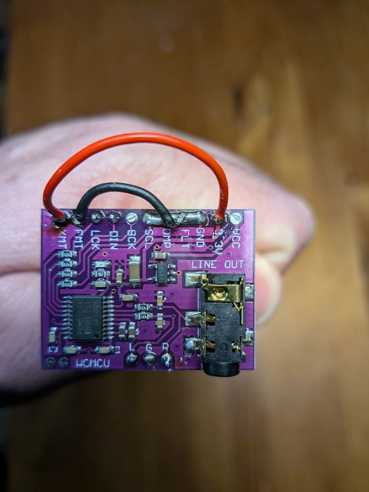
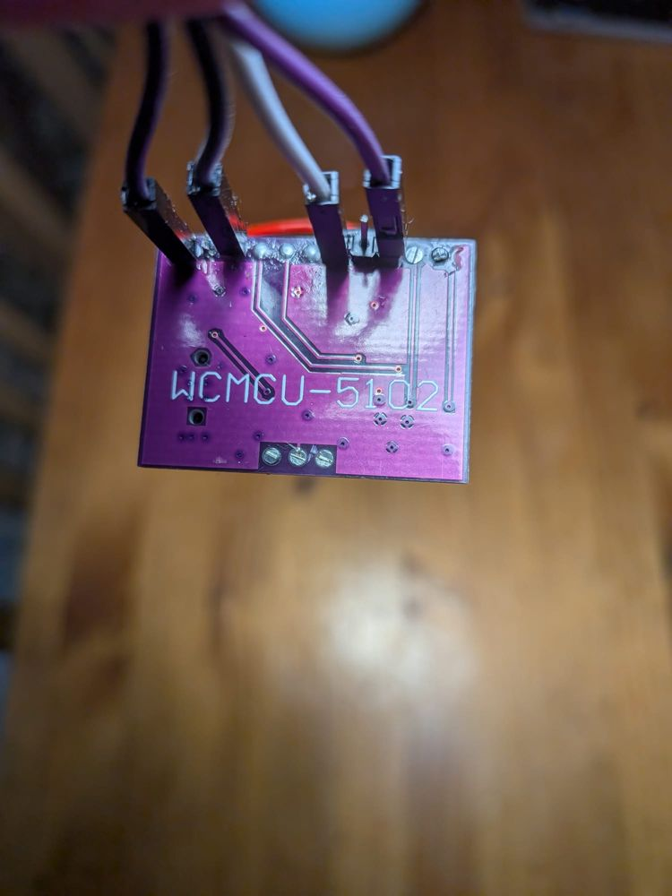
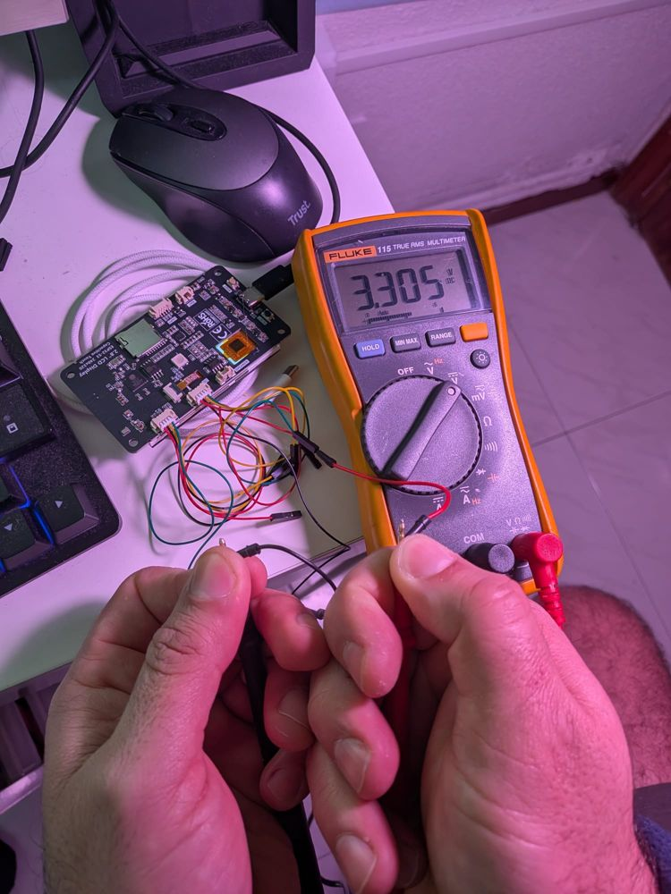
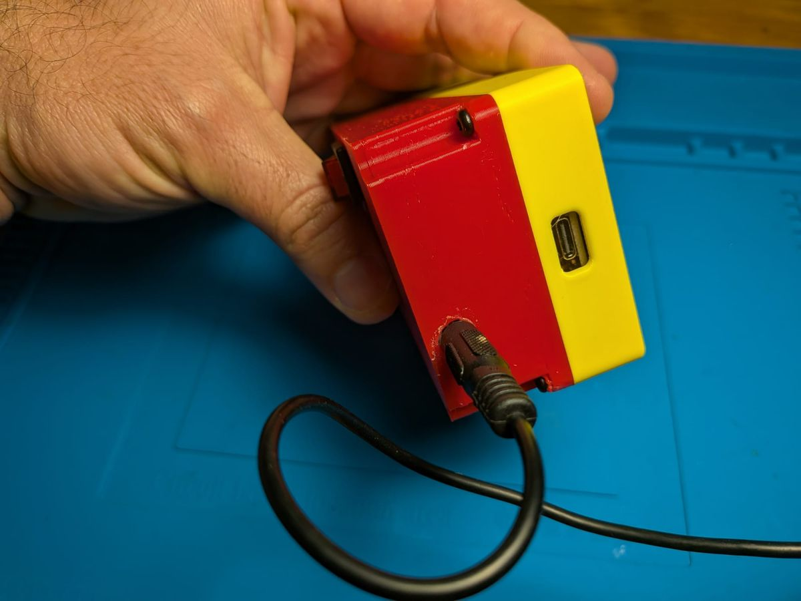
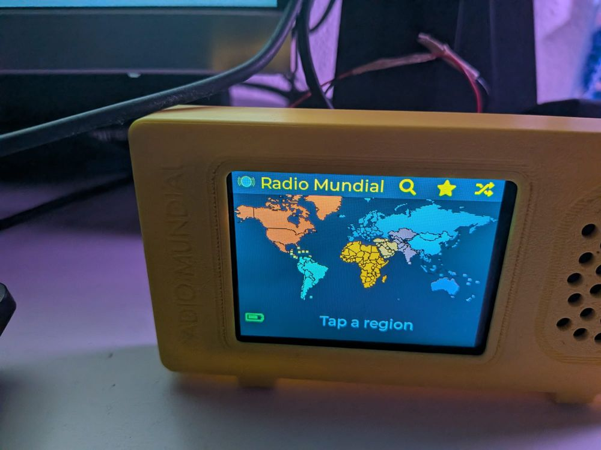

Radio Mundial: the «backpack» build
An optional upgrade of the small radio: a deeper back cover that holds a line-out DAC (to play through any amplifier, powered speakers or headphones), a battery and a power switch for the battery. The front of the case does not change.

You do not need any of this. The basic build uses only what comes with the Freenove kit and works exactly the same. The firmware is the same for both builds: with nothing extra connected, the radio plays through its own speaker and shows no battery or DAC icons.
1. Parts
Everything from the basic build, plus:
| Part | Notes |
|---|---|
| PCM5102A DAC board, WCMCU-5102 type, with a 3.5 mm jack | 32.5 × 24 mm. The backpack is made for this board: its jack comes out through a hole in the side. |
| Battery: 2 × 18650 cells in parallel (1S, 3.7 V) in a holder with a protection board | Up to 68 × 38 × 22 mm. Never in series. One cell or a LiPo pack also works. |
| Small rocker switch | Body 20 × 13 mm, 23 mm deep, snap-in. Rated for at least 1 A. A lit switch is fine: leave its third pin unconnected. |
| 1.25 mm 2-pin cable | For the board's BAT connector. |
| A second 1.25 mm 4-pin cable | The kit includes one; the DAC needs two. |
| 4 × M3 × 10 mm screws | Instead of the 4 × M3 × 8 of the flat back cover. |
| 2 zip ties, up to 4.8 mm wide | To hold the battery. |
| Hot glue, soldering iron, heat-shrink tubing, multimeter | The multimeter is to check the wires before plugging anything in. |
2. Print the backpack
PETG, with the bottom of the backpack on the bed and the open side up, no supports. Same settings as the rest of the case.


3. Wire the DAC
The DAC uses two of the board's small connectors. Full step-by-step guide with diagrams and two small test programs: DAC wiring kit (the PDF is in Spanish; the table below has everything you need).
| Board connector | Pin | DAC (WCMCU-5102) |
|---|---|---|
| IO2 IO3 IO14 IO21 | IO2 | DIN |
| IO2 IO3 IO14 IO21 | IO14 | BCK |
| IO2 IO3 IO14 IO21 | IO21 | LCK |
| IO2 IO3 IO14 IO21 | IO3 | not connected: insulate it |
| I2C | 3V3 | 3.3V pin |
| I2C | GND | GND |
| I2C | SCL, SDA | not connected: insulate them |
| On the DAC itself | SCK to GND (labelled «SCL» on some boards): required. FLT, DMP, FMT to GND; XMT to 3.3V. VCC not connected. | |
Check the wire colours with a multimeter before connecting the DAC: the colours of these cables vary. The
identificar test program in the wiring kit helps you find each one.



4. Battery and switch
- Charge both cells to the same voltage before putting them in parallel.
- The switch goes in the battery's + wire, between the battery holder and the board.
- Connect the battery to the BAT connector, never to SPEAKER. The board's schematic marks the polarity: pin 1 is + and pin 2 is GND. Check it with a multimeter on your cable before plugging it in: a reversed battery can damage the board.
- The board charges the battery over USB-C at about 290 mA. Two 3000 mAh cells take around 20 hours to charge from empty.
- Switch off: the battery is disconnected. The radio still works on USB-C, but the battery does not charge.
- Switch on: the radio runs on the battery when you unplug USB-C, and charges it when you plug it in.


5. Assembly
- Snap the switch into its hole in the back of the backpack.
- Glue the DAC with a few dots of hot glue on its flat underside, with the jack pushed against its hole on the USB-C side. Keep glue off the jack and the pins.
- Put the battery in between the light tube and the speaker-side wall, slightly tilted, speaker end first. Hold it with the two zip ties under the small bridges on each side. No hot glue on the battery.
- Close the backpack onto the front with the 4 × M3 × 10 mm screws. Its rim centres it in the front.



6. Using it
Install Radio Mundial v0.6.0 or later from the install page, as in the basic build.
- Sound through the DAC: open Settings (hold the title of the map) and tap the speaker icon in the right-hand column: it turns yellow and says DAC. Tap it again to go back to the built-in speaker. While the DAC is selected, the built-in speaker stays silent, and the player screen says Playing on the DAC.
- Battery level: an icon in the bottom-left corner when the battery is getting low. With a full battery there is no icon.
- Switch off: with USB-C plugged in and the switch off, a grey battery with an ✕ appears. Settings shows the battery as ON or OFF at the top right.
- Headphones: the DAC is a line output. It works with headphones, but start with the volume low.


7. Troubleshooting
| Problem | What to try |
|---|---|
| No sound at all | Check whether Settings says DAC: then the sound goes to the jack, not the speaker. |
| No sound from the DAC | Check SCK to GND on the DAC, the 3.3V and GND wires and the three audio wires. The tono test program in the wiring kit plays a tone on each channel. |
| The plug does not go all the way in | The rubber of some plugs is thick: the hole is 10 mm. Make sure the DAC's jack is pressed against the wall. |
| The ✕ appears with the switch on | Write RMV in a serial monitor (115200 baud) and report the numbers on GitHub. |
| You removed the battery for good and the ✕ stays | In Settings, tap the small text at the top right twice: the radio forgets the battery. |